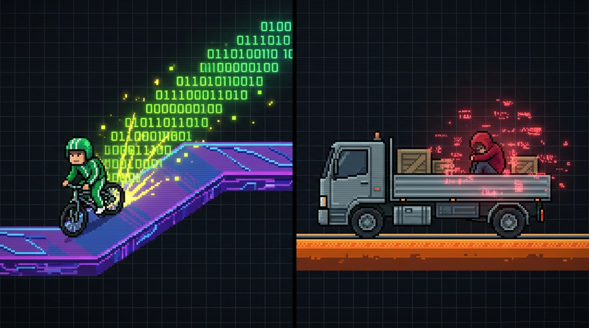

Como você acabou de ver no vídeo de apresentação, a dinâmica de estudar com o suporte da Inteligência Artificial espelha perfeitamente as mecânicas de um ambiente de simulação e sobrevivência como o Minecraft. Não se trata de proibir a ferramenta, mas de entender qual postura você assume diante da tela quando o desafio aperta.

No jogo, cada bloco exige exploração, tentativa, erro e consolidação. O progresso nasce do esforço adaptativo. Nos estudos, jogar no modo sobrevivência significa usar a Inteligência Artificial como uma mentora analítica: pedir pistas estruturais, debater pontos cegos de um argumento ou exigir analogias para decifrar conceitos complexos por conta própria.
Aqui, você recebe recursos infinitos, inventário ilimitado e imunidade total a falhas. Não há riscos, mas também não há esforço ou superação. Transposto para a sua rotina acadêmica, este modo é ativado quando você terceiriza a sua capacidade de pensar, exigindo que a IA entregue o código pronto, o resumo mastigado ou a resposta final para cópia imediata.
A IA como Amplificadora (Copiloto): Quando você assume as rédeas da interação, a IA atua como um andaime pedagógico (scaffolding). Ela acelera o mapeamento de informações e expande suas conexões críticas, mas a musculatura cognitiva e a tomada de decisão continuam sob sua total responsabilidade.
A IA como Substituta (Muleta): Quando a postura é puramente passiva, ocorre o descarregamento mental (cognitive offloading) de processos essenciais. A velocidade imediata na entrega esconde um custo invisível: a falta de treino reduz o engajamento intelectual e prejudica a formação da sua memória de longo prazo.
Ao analisar suas últimas sessões de estudo com o ChatGPT, Claude ou Copilot, qual papel tem se destacado no seu cotidiano?
Chegou a hora de olhar no espelho. Qual desses dois modos descreve suas últimas interações com a IA?
Descobrir Meu Perfil de Aprendizado ➔